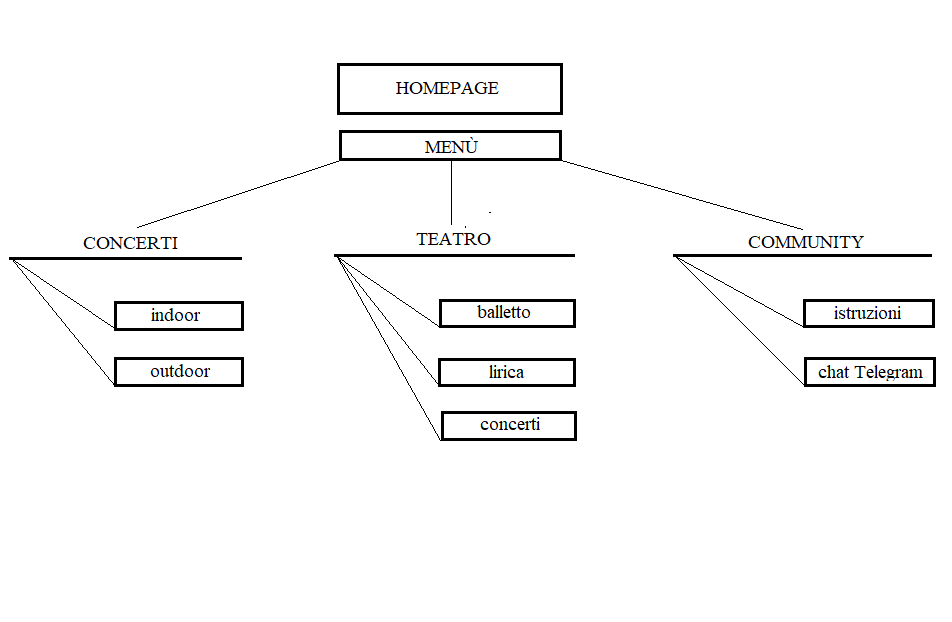

PROJECT MANAGEMENT PLAN
ABSTRACT
BENCHMARKING
- Obiettivi: promozione dei luoghi di cultura e incentivo alla partecipazione a eventi culturali (spettacoli, concerti, ...) in seguito alla chiusura forzata durante il periodo pandemico; incentivo alla socialità; supporto alla ricerca di eventi sul territorio regionale e nazionale.
- Target utente: vista la varietà degli eventi proposti e l'intrinseca finalità promozionale nonché informativa, si è pensato a un target inclusivo con particolare attenzione per ciò che concerne l'aspetto sociale alle fasce 15-30 anni ca. (concerti ed eventi musicali) e 50-70 anni ca. (spettacoli teatrali).
- Competitors: per quanto riguarda la prima finalità del nostro sito, abbiamo giudicato essere i più significativi beniculturali.it ed ert.com per reputazione e chiarezza del provider e per la accuratezza del registro dei contenuti. Vivoconcerti.com e culturabologna.it offrono un simile servizio di ricerca su base territoriale; tuttavia, non abbiamo individuato competitors che incentivino anche l'interazione fra gli utenti. Infine, riportiamo il sito ticketone.it come principale competitor e fonte di ispirazione per ciò che riguarda la finalità informativa.
STRUTTURA E LAYOUT
- Architettura del sito: 
- Wireframe:
- Look and feel. Nel sito abbiamo optato per uno stile moderno e pop: nella homepage è prevalente il contrasto cromatico tra giallo, nero e bianco; nelle pagine del menù la palette prevede l'utilizzo di colori più sgargianti la cui diversità richiama le differenze tra i generi musicali, pur mantenendo una continuità tematica con il resto del sito.
Fig.1 Mappa concettuale del sito

Fig. 2 Wireframe Homepage

Fig. 3 Wireframe Calendari

Fig. 4 Wireframe Community
LINGUAGGI E STRUMENTI
- Linguaggi web utilizzati: html,css.
- Strumenti:
- W3SCHOOL come spunto per alcune istruzioni e tutorial;
- Google Fonts per il reperimento delle font utilizzati;
- Font Awesome per la ricerca delle icone;
- Code Pen come spunto per alcune istruzioni e tutorial;
- Elfsight per i widget;
- Adobe Color per la scelta dei colori e degli abbinamenti;
- Google – Creative Commons per le immagini di artisti e luoghi a completamento degli eventi;
- Paint per la realizzazione del wireframe e della architettura;
- Github per la pubblicazione;
- Telegram per la promozione e per la parte interattiva tra la community del sito.
COMMUNICATION STRATEGY
BACKGROUND
OBIETTIVI COMUNICATIVI
- Il nostro sito si compone di grafiche essenziali allo scopo di rendersi il più intuitivo possibile per l'utente medio.
- Si vuole facilitare la navigazione all'interno della pagina per incoraggiare l'interazione all'interno di un target utente eterogeneo, rilanciare l'attività musicale nel periodo post-pandemia e sensibilizzare il pubblico sul tema.
- Attraverso il concept minimal si è cercato di dare un'impronta moderna e accattivante allo stile della pagina in modo da coniugare semplicità e cura per l'aspetto estetico finale.
TARGET AUDIENCE E MESSAGGIO
Nella realizzazione di questo progetto ci auspichiamo di aumentare l'engagement nei confronti delle tematiche culturali, intraprendendo un'azione di promozione e partecipazione sociale riguardo l'intero settore musicale. Per affermare questo intento di sensibilizzazione e attenzione circa la varietà dell'ambito, le pagine del menù riportano tutti i tipi di eventi a cui è possibile partecipare: concerti, balletto, stagione lirica e stagione sinfonica.
PROMOZIONE
VALUTAZIONE DEI RISULTATI